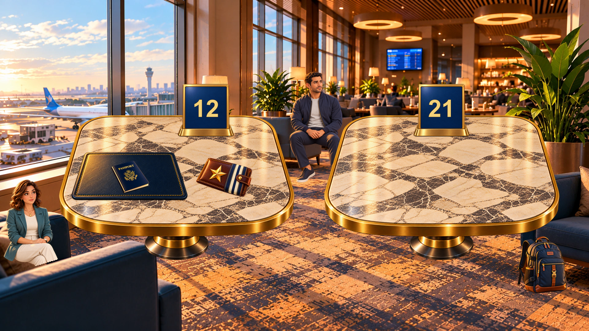

Offline camera study
Research controls only — no observation timer, evidence collection or production gameplay.

Arrow keys, scrollbars or one-finger native scrolling pan an enlarged image. Controls are outside the scene. Snapshot switches preserve the same view. “Return to overview” restores full composition.